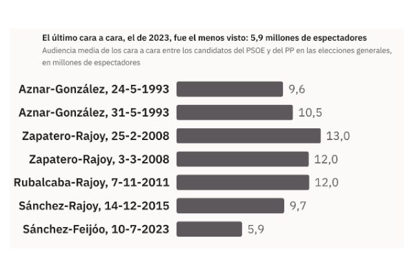

Actualidad · Programas electorales · España
Programa electoral de PP, PSOE, Vox y Frente Amplio: qué propone cada uno el 29N
El PP promete construir un millón de viviendas; el PSOE, un parque público de 100.000, y el Frente Amplio, 1,5 millones de viviendas públicas en 12 años. Vox no da cifra y pide «prioridad nacional». Lo que dicen los cuatro programas de las elecciones generales del 29N sobre vivienda, impuestos, pensiones e inmigración, con sus palabras.
Por Nacho G. del Álamo · · Actualizado el
Cada párrafo lleva una etiqueta: dato (cifra comprobable con las fuentes), patrón (relación que se repite, sin afirmar la causa), hipótesis (explicación posible, sin dos fuentes independientes) o contexto (hechos y declaraciones publicados por otros, enlazados). Cómo verificamos
Los cuatro programas
DatoLos cuatro partidos con más intención de voto en las encuestas de las elecciones generales ya han publicado su programa electoral para el 29N: el del PP, «La reconstrucción nacional», 249 medidas en 64 páginas; el del PSOE, «La fuerza de seguir avanzando», 500 compromisos en 114 páginas; el de Vox, «Es sentido común», 115 propuestas en 55 páginas, y el del Frente Amplio, 18 bloques en 151 páginas. El del PP está en su web; los del PSOE y Vox, en las copias que publicó El Independiente, y el del Frente Amplio, en la de Demócrata. Podemos, que se presenta por separado del Frente Amplio, no ha publicado el suyo.
ContextoAquí está lo que dice cada uno sobre los cuatro temas que más se discuten en esta campaña: vivienda, impuestos, pensiones e inmigración. Son citas literales, con la página del documento: un programa es una promesa, no una ley.
Vivienda: un millón, 100.000 o 1,5 millones
ContextoPP. Su medida 144 se titula «Construiremos un millón de viviendas». Para ello propone «Movilizaremos suelo público y privado en colaboración con las Comunidades Autónomas y las entidades locales» (programa del PP, página 41) y una nueva Ley del Suelo.
ContextoPSOE. Su compromiso 42 es «Constituir un parque público estatal de 100.000 viviendas mediante la construcción y adquisición» (programa del PSOE, página 28), que se sumarían a las de las comunidades autónomas y los ayuntamientos.
ContextoVox. No da una cifra de viviendas. Pide «Prioridad nacional para acceder a una vivienda protegida, social o a una ayuda al alquiler» (programa de Vox, página 19), la derogación de la Ley de Vivienda y un «Tipo 0% de IVA para la compra de tu primera vivienda habitual» (programa de Vox, página 20) si es nueva.
ContextoFrente Amplio. Promete un parque público con el que «se incorporarán 1,5 millones de viviendas públicas en 12 años» (programa del Frente Amplio, página 10), pagado con el 1 % del PIB cada año, y topar los alquileres «vinculándolas al 25 % de los ingresos del hogar» (programa del Frente Amplio, página 7).
Impuestos: bajar el IRPF o subirlo a las rentas altas
ContextoPP. «Quien cobre el salario mínimo no pagará IRPF» (programa del PP, página 47), y además promete deflactar la tarifa del impuesto para que la inflación no suba lo que se paga.
ContextoPSOE. Sube los impuestos a las rentas del capital más altas: «llegando progresivamente a un tipo máximo del 35% para rentas del capital superiores a 300.000€» (programa del PSOE, página 48), sin tocar los dos primeros tramos.
ContextoVox. Propone una «Simplificación y bajada del IRPF» (programa de Vox, página 7), con un tipo más bajo según el número de hijos, y bajar el IVA y el impuesto de Sociedades. No dice cuánto.
ContextoFrente Amplio. Plantea un tipo mínimo real del 20 % en Sociedades y un impuesto a los «ultrarricos». En herencias, «Limitaremos las herencias de los ultrarricos a un máximo de 10 millones de euros por heredero» (programa del Frente Amplio, página 46).
Pensiones: tres de los cuatro las atan al IPC
ContextoPP. «Aseguraremos que mantengan su poder adquisitivo y suban cada año con el IPC» (programa del PP, página 34).
ContextoPSOE. Quiere «Blindar constitucionalmente el sistema público de pensiones y su revalorización conforme al IPC» (programa del PSOE, página 40).
ContextoVox. Le dedica una medida: «Garantizar la sostenibilidad del sistema de pensiones» (programa de Vox, página 8), que fía al crecimiento de la economía. No habla del IPC.
ContextoFrente Amplio. Pide llevar a la Constitución «su revalorización automática con arreglo al IPC» (programa del Frente Amplio, página 57), con una pensión mínima igual al SMI. Además, «Devolveremos la edad de jubilación a los 65 años» (programa del Frente Amplio, página 57).
Inmigración: de «ni uno más» a regularizar
ContextoPP. «Fijaremos cupos anuales que determinen cuántos trabajadores pueden venir y para qué sectores» (programa del PP, página 19), y reformar la Ley de Extranjería para prohibir las regularizaciones masivas.
ContextoPSOE. «España necesita una migración ordenada, legal y segura, que responda a sus necesidades demográficas y económicas» (programa del PSOE, página 92). Propone un plan de integración de 500 millones de euros.
ContextoVox. Su medida 9: «Ni uno más. Después de recibir a 5 millones de personas en 5 años España no puede acoger a más inmigrantes» (programa de Vox, página 13). Incluye también la «remigración» y la prohibición de alquilar a inmigrantes en situación irregular.
ContextoFrente Amplio. Quiere «Culminar la regularización extraordinaria de 2026» (programa del Frente Amplio, página 126) y un procedimiento estable de regularización.
De qué habla más cada programa
DatoContando palabras, el programa de Vox nombra la inmigración unas 6 veces más que el del PSOE en proporción a su longitud: 24,2 veces por cada 10.000 palabras, frente a 4,0. El del PSOE es el que más habla de vivienda (44,6), de igualdad (31,1) y de clima y energía (37,8). El de Vox es el más corto, con unas 6.200 palabras, según nuestro recuento, frente a unas 44.700 del Frente Amplio, así que en él cada mención pesa más.
Ver la tabla
| Tema | PP | PSOE | Vox | Frente Amplio |
|---|---|---|---|---|
| Vivienda | 24,8 | 44,6 | 33,9 | 29,7 |
| Impuestos | 37,4 | 23,1 | 53,2 | 43,6 |
| Inmigración | 6,6 | 4,0 | 24,2 | 3,4 |
| Pensiones | 3,3 | 8,6 | 3,2 | 4,5 |
| Sanidad | 12,6 | 10,8 | 25,8 | 9,4 |
| Igualdad y violencia machista | 10,3 | 31,1 | 4,8 | 9,8 |
| Clima y energía | 8,4 | 37,8 | 17,7 | 31,7 |
Preguntas frecuentes
¿Dónde se puede leer el programa electoral de cada partido?
El del PP, en su web. Los del PSOE y Vox, en las copias de El Independiente (PSOE, Vox), y el del Frente Amplio, en la de Demócrata.
¿Cuántas medidas tiene cada programa?
El del PP, 249 medidas; el del PSOE, 500 compromisos; el de Vox, 115 propuestas, y el del Frente Amplio se ordena en 18 bloques.
¿Qué propone cada partido sobre vivienda?
El PP, construir un millón de viviendas; el PSOE, un parque público estatal de 100.000; el Frente Amplio, 1,5 millones de viviendas públicas en 12 años, y Vox, prioridad para los españoles en la vivienda protegida y un IVA del 0 % en la primera vivienda nueva.
¿Tiene Podemos programa electoral para el 29N?
No lo ha publicado. Se presenta por separado del Frente Amplio.
Las encuestas de las elecciones generales del 29N · Debate Sánchez Feijóo · Quién va con quién el 29N
Método y fuentes
- Qué se compara
- Los programas electorales del 29N del PP, el PSOE, Vox y el Frente Amplio: lo que dice cada uno sobre vivienda, impuestos, pensiones e inmigración, con citas literales, y cuántas veces nombra cada tema por cada 10.000 palabras.
- Límites
- Solo los cuatro partidos con más intención de voto en las encuestas; no están ERC, Junts, PNV, EH Bildu, BNG ni Coalición Canaria. Podemos no ha publicado programa. Contar palabras mide de qué habla un programa, no lo que hará un gobierno. Los programas del PSOE, Vox y Frente Amplio se leen en copias publicadas por medios (El Independiente y Demócrata), no en la web del partido.
- Cómo se calcula
- Texto de cada PDF con pdftotext, en minúsculas y sin tildes; apariciones de cada patrón por cada 10.000 palabras. Scripts programas_29n_menciones.py (recuento) y programas_29n.py (página), en actualidad/src/resumenes/. Las citas se comprueban literalmente en la página del PDF que se indica. Cifras reproducibles con los scripts del expediente de la pieza. Metodología de Actualidad · Metodología del Atlas
- Fuentes
- PP, programa electoral «La reconstrucción nacional» (10-11-2026)
- PSOE, programa «La fuerza de seguir avanzando» (copia de El Independiente, noviembre de 2026)
- Vox, programa «Es sentido común» (copia de El Independiente, noviembre de 2026)
- Frente Amplio, programa electoral (copia de Demócrata, 16-11-2026)
- Demócrata, el programa del Frente Amplio (16-11-2026)
- Mapa Electoral, encuestas de las elecciones generales 2026
- Autoría
- Nacho G. del Álamo
- Revisión de datos y texto
- Nacho G. del Álamo, 19 de noviembre de 2026
- Publicado · actualizado
- 19 de noviembre de 2026 · 19 de noviembre de 2026, a las 22.30
- Correcciones
- Ninguna.
Serie «Camino al 29N»: 167 piezas
- De los 25 convocados de De la Fuente nacidos en España, 15 nacieron donde ganó el PSOE en 2023 y 8 donde ganó el PP; en Puente Genil, el PP ganó por 31 votos
- Vox, primero en el CIS entre los de 18 a 24 años: la generación de 2008 estrena voto en unas generales
- El PSOE sube en siete de las nueve encuestas de la primera semana de campaña; el PP baja en cuatro y sube en otras cuatro
- Feijóo hace campaña con UPN en Pamplona, donde el PSOE ganó 77 de las 151 secciones en 2023; con UPN y PP sumados, se habría quedado en 49
- Al PP le faltaron 9.793 votos en 2023 para recuperar un diputado en Gipuzkoa; Feijóo arropa hoy a su candidato, atacado en Hernani
- En 2023, las últimas encuestas daban al PP 5,7 puntos de ventaja sobre el PSOE y ganó por 1,4: si hoy fallaran igual, el PSOE iría primero
- Si la abstención fuera un partido, en 2023 habría quedado por delante del ganador en más de la mitad de las grandes ciudades y en la mitad de las secciones de España
- Voto por correo para las elecciones generales del 29N: el plazo para pedirlo acaba el jueves 19; en 2023, una de cada tres solicitudes llegó en las dos últimas semanas
- Encuestas y debate: tras el cara a cara de 2023, 10 de 14 encuestadoras ampliaron la ventaja del PP; trece días después ganó por 1,4 puntos
- Elecciones generales: una de cada tres secciones cambió de ganador entre 2019 y 2023
- Elecciones generales: las encuestas dan al PSOE entre el 25,5 y el 33,3 %
- Elecciones generales: Vox baja al 17 % en la encuesta diaria de El País
- Encuestas elecciones generales 2026, hoy 18 de noviembre: el PSOE, a dos puntos o menos del PP
- Encuestas elecciones generales 2026, hoy 19 de noviembre: Sondaxe deja al PSOE a 0,7 puntos del PP
- Debate Sánchez Feijóo: hora, dónde verlo y quién gana el cara a cara
- Elecciones generales: el modelo de encuestas da escaño al Frente Amplio en 5 de sus 17 provincias
- Elecciones generales: en Gijón, Vox sacó en 2023 su mejor resultado en Somió, el barrio más rico: 17,0 %
- Encuestas elecciones generales 2026, hoy 20 de noviembre: el PP gana en las cinco, por entre 2,0 y 4,6 puntos
- Cómo votar en las elecciones generales del 29N: horario, qué llevar y cómo saber tu colegio
- Estás aquíPrograma electoral de PP, PSOE, Vox y Frente Amplio: qué propone cada uno el 29N
- Ver las 167 piezas de la serie
Más datos: elecciones generales del 29N de 2026: fecha y escaños por provincia · resultados de las elecciones generales 2026 (29N) y los de 2023 · dónde y cómo votar el 29N: colegio electoral, voto por correo y plazos.
Sigue leyendo
 Cómo votarCómo votar en las elecciones generales del 29N: horario, qué llevar y cómo saber tu colegio
Cómo votarCómo votar en las elecciones generales del 29N: horario, qué llevar y cómo saber tu colegio Encuestas de hoyEncuestas elecciones generales 2026, hoy 20 de noviembre: el PP gana en las cinco, por entre 2,0 y 4,6 puntos
Encuestas de hoyEncuestas elecciones generales 2026, hoy 20 de noviembre: el PP gana en las cinco, por entre 2,0 y 4,6 puntos Vox en GijónElecciones generales: en Gijón, Vox sacó en 2023 su mejor resultado en Somió, el barrio más rico: 17,0 %
Vox en GijónElecciones generales: en Gijón, Vox sacó en 2023 su mejor resultado en Somió, el barrio más rico: 17,0 % Frente AmplioElecciones generales: el modelo de encuestas da escaño al Frente Amplio en 5 de sus 17 provincias
Frente AmplioElecciones generales: el modelo de encuestas da escaño al Frente Amplio en 5 de sus 17 provincias
El debateDebate Sánchez Feijóo: hora, dónde verlo y quién gana el cara a cara Encuestas de hoyEncuestas elecciones generales 2026, hoy 19 de noviembre: Sondaxe deja al PSOE a 0,7 puntos del PP
Encuestas de hoyEncuestas elecciones generales 2026, hoy 19 de noviembre: Sondaxe deja al PSOE a 0,7 puntos del PP